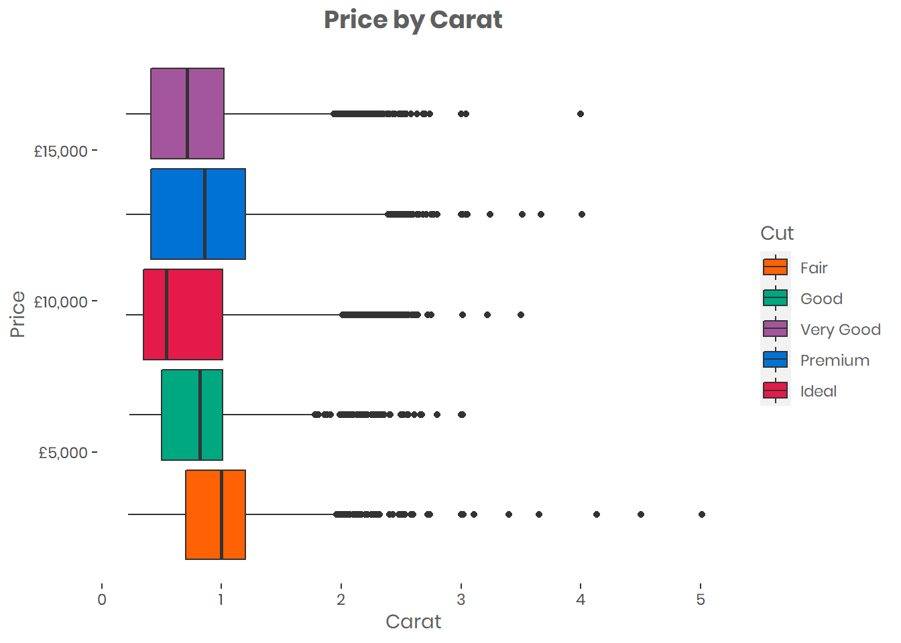
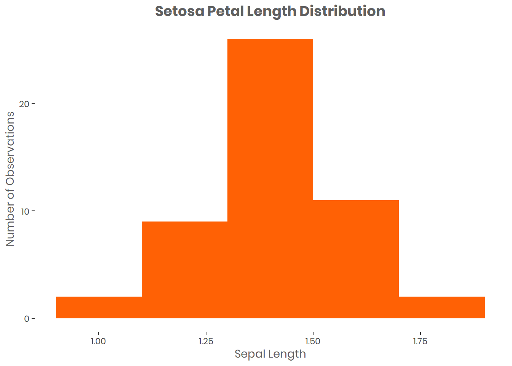

Cookbook
These examples all use datasets within R: diamonds from ggplot2 and iris from base R.
Installing Fonts
The extrafont package enables the use of custom fonts in the plots. To install a new font in Windows 10, download the TrueType font file, and follow the instructions here.
Brand colours
use se_colour in plots to assign the Sport England house colours.
# Set colour scheme
se_colour <- c("#E79AB5", "#B8345C", "#8CCDD6", "#43A8B6", "#00818F", "#C1DC9A", "#7ABB40", "#5D4086") # colours for use in plotScatter Plot

Depending on your data, additional changes may be required to “neaten” the plot. For example, we can reformat the y axis labels to display them as currency, and add geom_smooth to help show patterns:
# Scatter plot
d <- diamonds
plot.point.v1 <- ggplot(data = d)+
geom_point(aes(x = carat, y = price, color = cut)) +
geom_smooth(aes(x = carat, y = price, color = cut)) +
theme(text = element_text(family = "Norwester", color = "#5F5F5F"),
plot.title=element_text(size=14,family = "Norwester", face="bold", hjust = 0.5),
panel.background = element_blank() ) +
labs( x= "Carat", y = "Price", title = "Price by Carat", fill = "Cut") +
scale_color_manual(values= se_colour) +
scale_y_continuous(labels = scales::dollar_format(prefix = "£")) # reformat scales to currency
plot.point.v1## `geom_smooth()` using method = 'gam' and formula 'y ~ s(x, bs = "cs")'Boxplot
A boxplot shows the distribution of a variable. It gives you the median, the quartiles, and all outliers (shown as individual dots).
You can do lots more to a boxplot, rotating it horizontally, adding the notch argument to add confidence intervals around the median, adding the mean, etc. See tidyverse documentation for more details
d <- diamonds
plot.box <- ggplot(data = d)+
geom_boxplot(aes(x = carat, y = price, fill = cut)) +
theme(text = element_text(family = "Norwester", color = "#5F5F5F"),
plot.title=element_text(size=14,family = "Norwester", face="bold", hjust = 0.5),
panel.background = element_blank()) +
labs( x= "Carat", y = "Price", title = "Price by Carat", fill = "Cut") +
scale_fill_manual(values=se_colour) +
scale_y_continuous(labels = scales::dollar_format(prefix = "£")) # reformat scales to currency
plot.box
Histogram
Using geom_hist, we can plot the distribution of a variable. Altering the “binwidth” argument changes the size of the bins, and thus the level of detail.
d <- iris
d <- subset(d, d$Species == "setosa") # only look at "Setosa" species from the Iris dataset
plot.hist <- ggplot(data = d)+
geom_histogram(aes(x = Petal.Length), binwidth = 0.2, fill = "#5D4086") +
theme(text = element_text(family = "Norwester", color = "#5F5F5F"),
plot.title=element_text(size=14,family = "Norwester", face="bold", hjust = 0.5),
panel.background = element_blank()) +
labs( x= "Sepal Length", y = "Number of Observations", title = "Setosa Petal Length Distribution")
plot.hist
Bar chart
We can use either geom_bar or geom_col for bar charts. For the former, the height of the bars relate to the number of cases per group and for the latter, the height represents the values.
d <- diamonds
plot.bar <- ggplot(data = d)+
geom_col(aes(x = cut, y = price, fill = cut)) +
theme(text = element_text(family = "Norwester", color = "#5F5F5F"),
plot.title=element_text(size=14,family = "Norwester", face="bold", hjust = 0.5),
panel.background = element_blank(),
legend.position = "none") + # remove legend
labs( x= "Cut", y = "Value of Diamonds", title = "Value of Diamonds by Cut") +
scale_fill_manual(values=se_colour) +
scale_y_continuous(labels = scales::dollar_format(prefix = "£"))
plot.bar